Graphic Design
●
Posters & Covers
●
2025–2026
Posters
& Covers
Poster, key-art and album-cover design for client campaigns and personal studies: a school program for Skylight Academy, a Ramadan food drive, a film one-sheet, album art and an editorial cover study.
- RoleGraphic Design
- DeliverablesPosters, key art, album covers
- ClientsSkylight Academy & associations
- Year2025–2026
Key Art & Covers 03
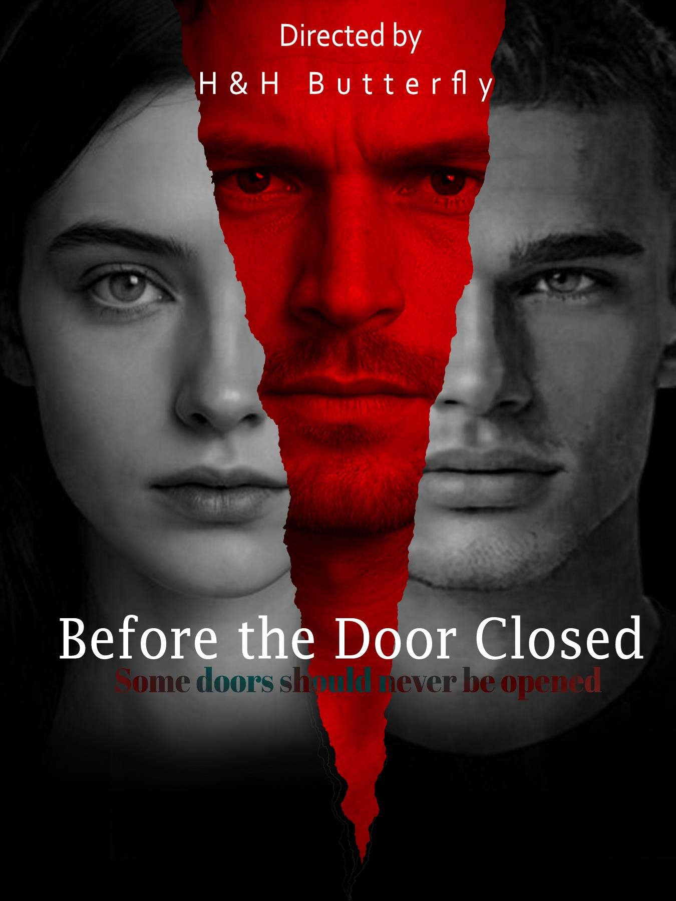
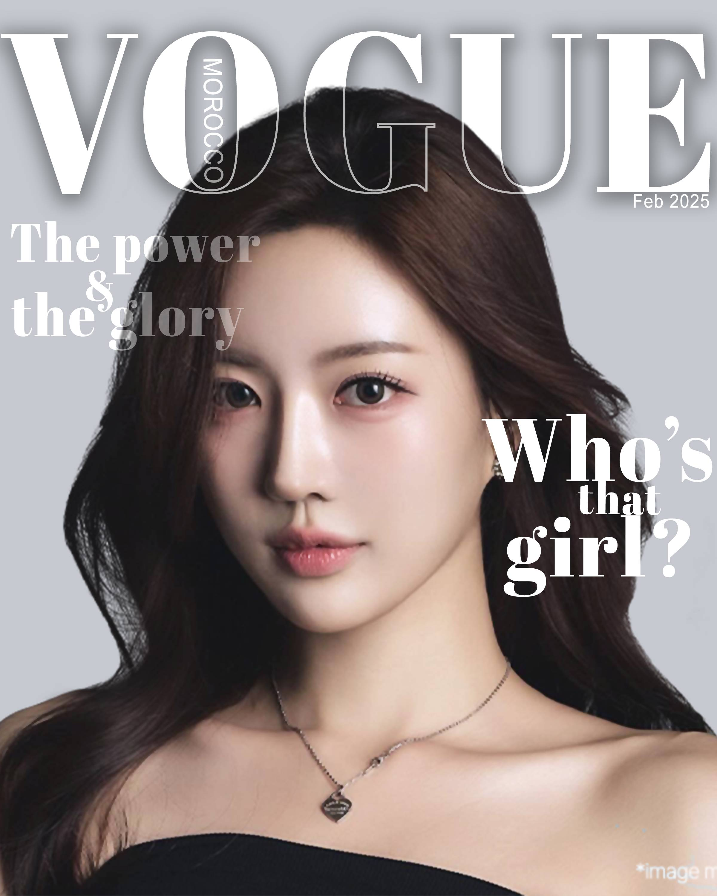
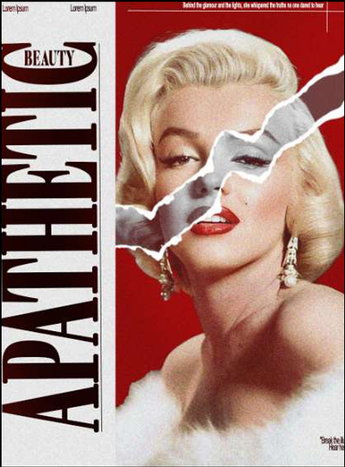
Album Art 04
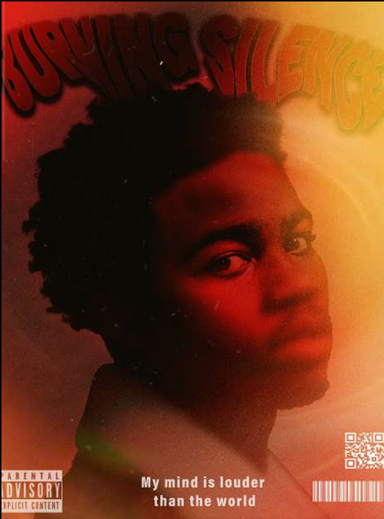
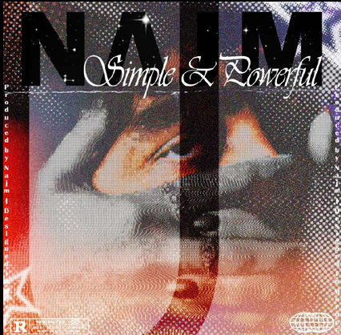
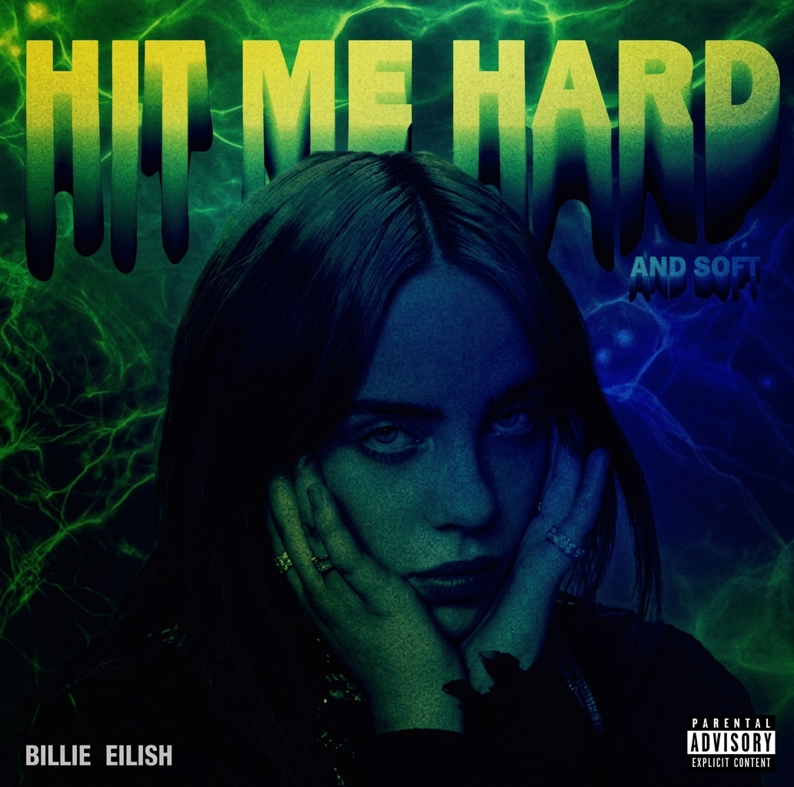
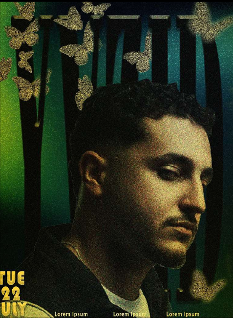
Client Campaigns 05
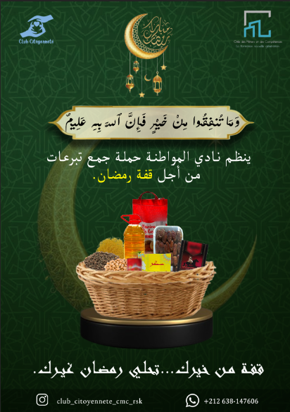
Skylight Academy 04
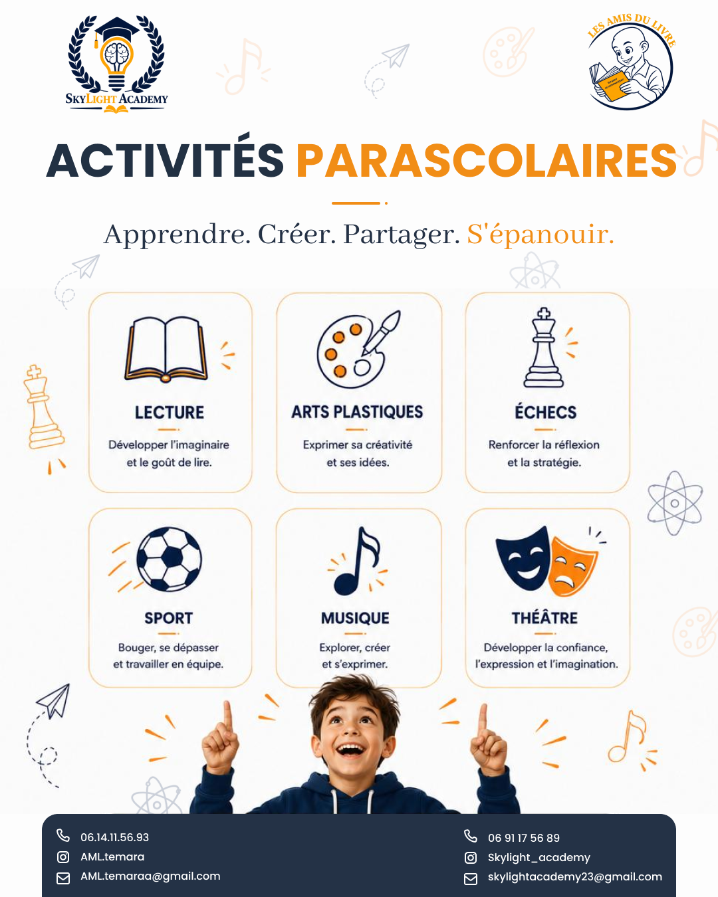
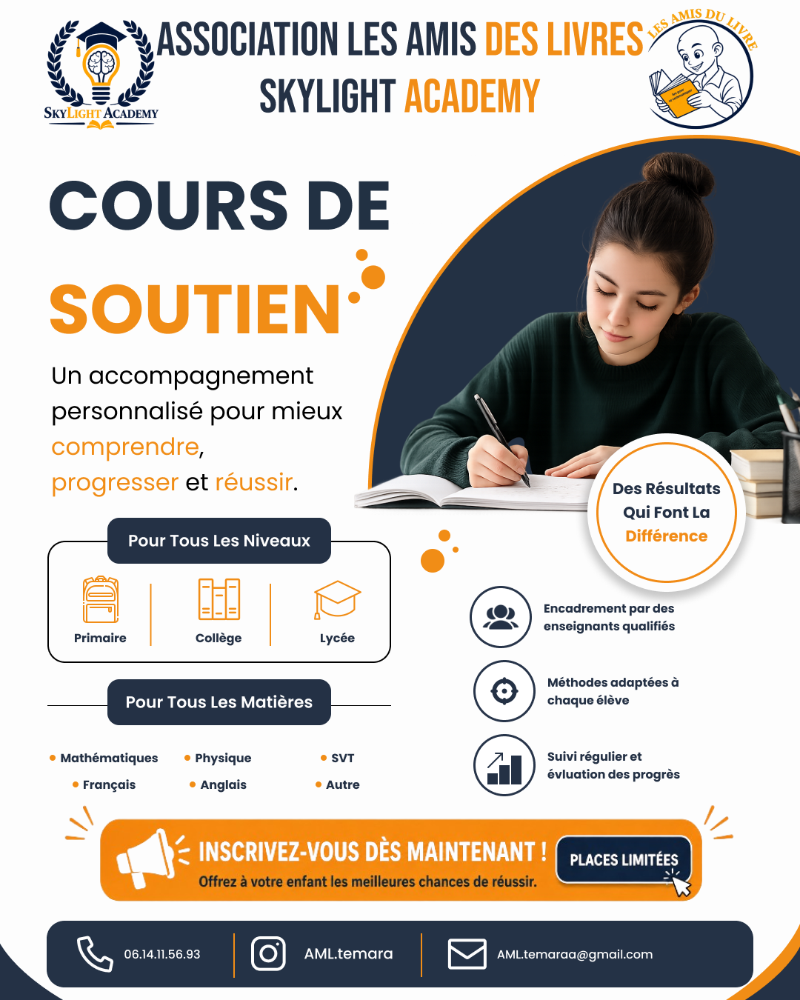
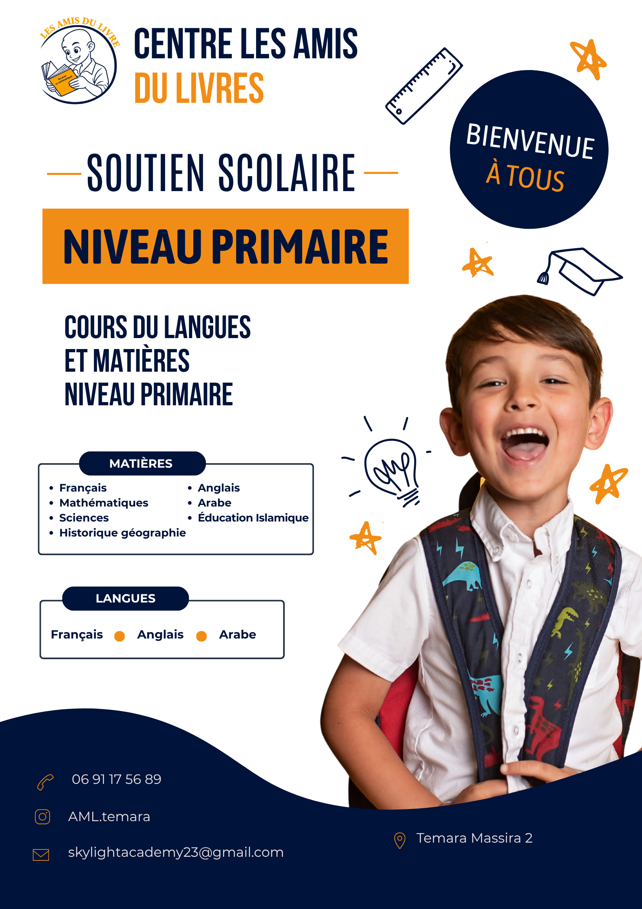